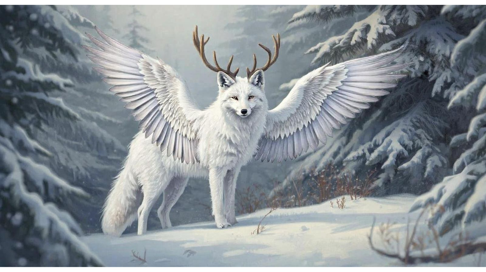
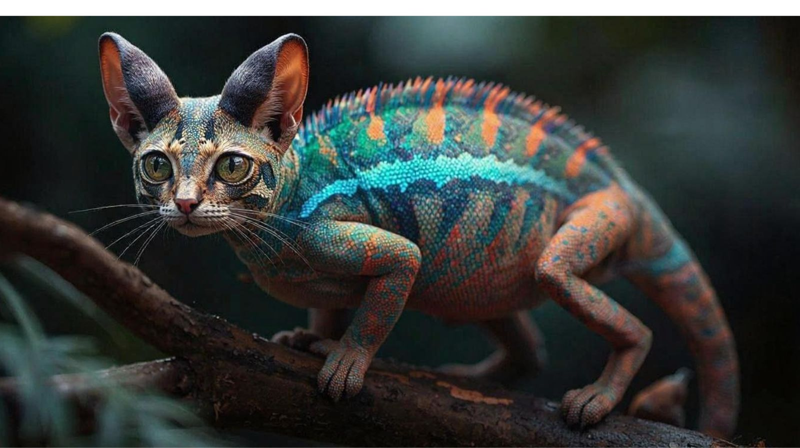
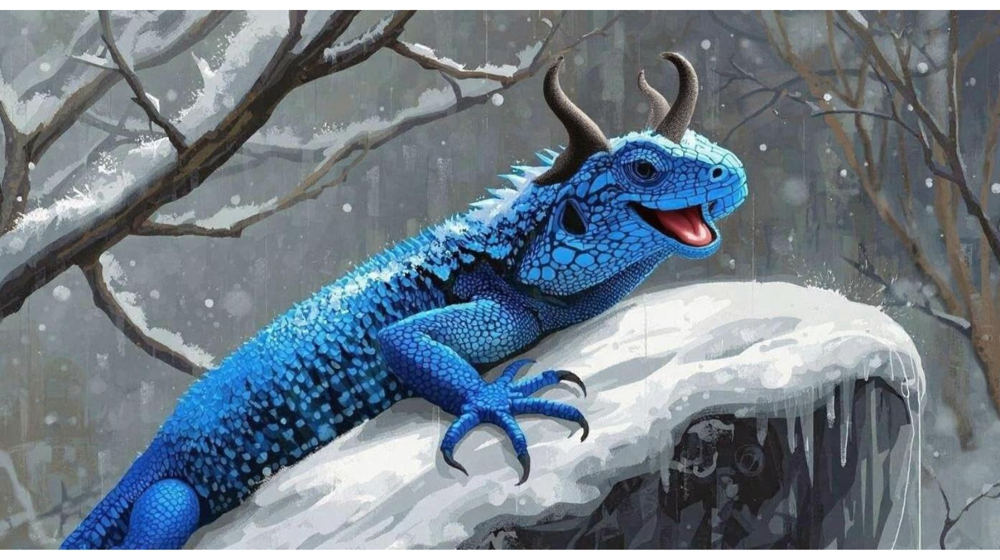

A research-and-creation project: students studied real animal adaptations, then used AI to predict and visualize how their animal might evolve millions of years from now.
Common & scientific name, classification, size, diet, and three cool facts — plus a photo or drawing.
Biome, climate, location, food web, and the dangers or predators it faces day to day.
3–5 current adaptations, each tagged structural, behavioral, or physiological, with how it helps survival.
Students choose a brand-new biome, or describe how their animal's home has changed due to humans.
Students prompt AI to help visualize 3–5 predicted future adaptations, then check each one against real science.
What surprised them, whether the animal could really survive, and how human impact shapes adaptation.
Predicting and visualizing a future adaptation is creative but falsifiable — exactly the kind of task AI is good at supporting and bad at doing unsupervised. Students used AI to generate visual concepts and stress-test their predictions against real evolutionary logic, catching moments where the AI got biology wrong and correcting it themselves.
| Role | What it means | How students lived it |
|---|---|---|
| Learner | Use AI to create plans for learning new skills, get unstuck, and seek feedback to improve understanding. | Used AI as a tutor when stuck on confusing adaptation science, then asked for feedback on explanations. |
| Problem Solver | Use AI as a brainstorming partner to generate new ideas and explore a wide range of possibilities. | Brainstormed "what if" evolutionary scenarios and used AI to visualize them. |
| Researcher | Use AI to investigate and analyze topics, evaluate claims, and compare sources of information. | Researched real adaptations, cross-checking sources before trusting any claim about their animal. |
| Connector | Use AI to increase human collaboration, including overcoming language barriers and finding common ground. | Connected their animal's traits to broader concepts of survival, climate, and human impact. |
| Synthesizer | Use AI to synthesize, remix, and refine information into formats/levels of complexity that meet their needs. | Combined real biology with creative reimagining to design a believable future adaptation. |
| Storyteller | Use AI to present and communicate complex ideas through text, image, audio, video, and other media. | Presented their animal's story and defended the science behind its predicted evolution. |

AI-assisted concept: feathered wings for gliding over deep snow and antlers for defense as warming tundra brings new predators north.

AI-assisted concept: chameleon-like color-shifting skin grafted onto a cat for camouflage if forced to hunt in a new, more exposed habitat.

AI-assisted concept: thickened cold-resistant scales and horns for defense, imagining how a heat-loving reptile might survive a sudden ice age.